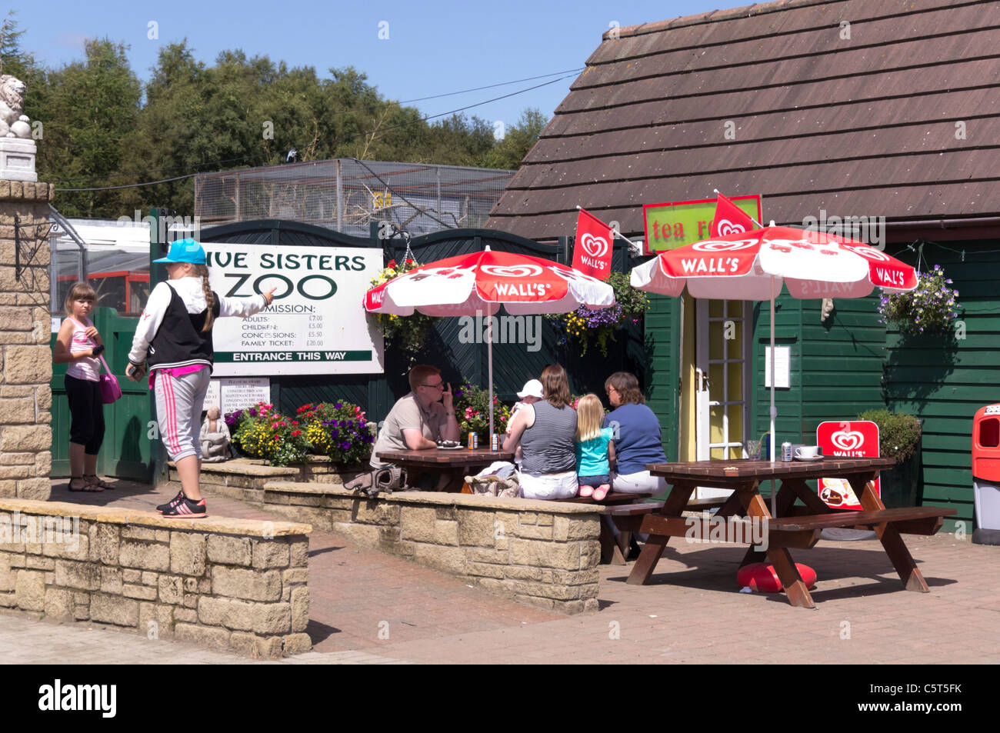

Zoo Café
The Zoo Café is the perfect spot to relax and enjoy a meal. Offering fresh food, snacks, and drinks, it’s a great place to take a break during your visit. Families can recharge while enjoying views of nearby animal enclosures.
The Zoo Café is the perfect spot to relax and enjoy a meal. Offering fresh food, snacks, and drinks, it’s a great place to take a break during your visit. Families can recharge while enjoying views of nearby animal enclosures.